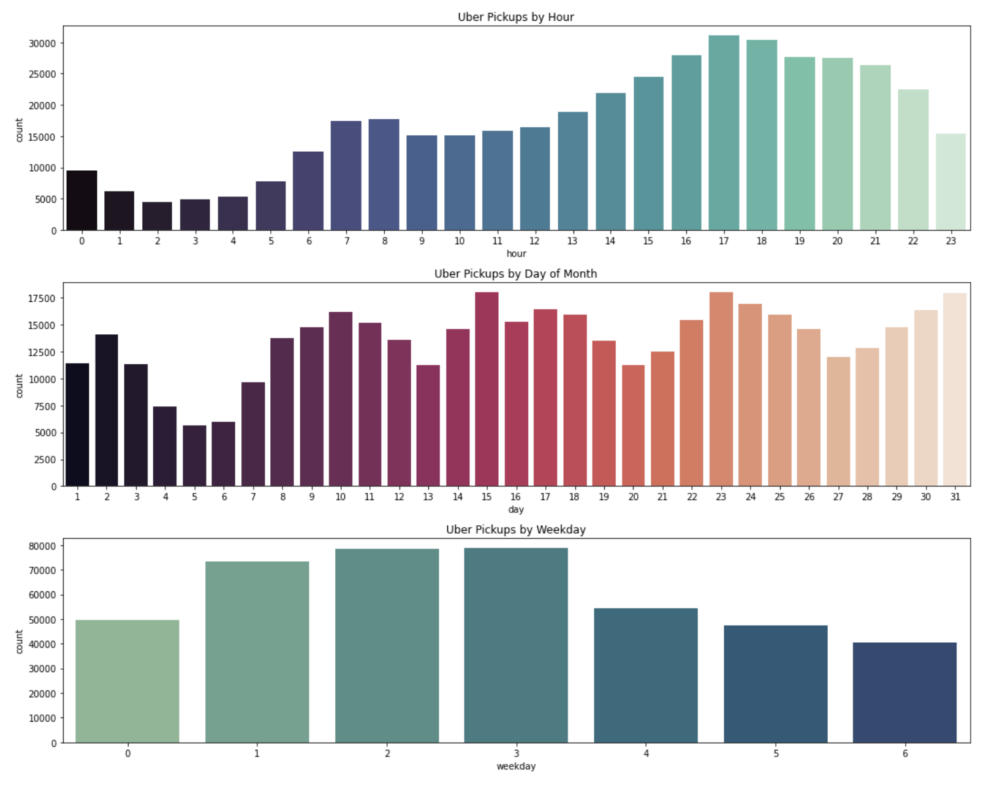
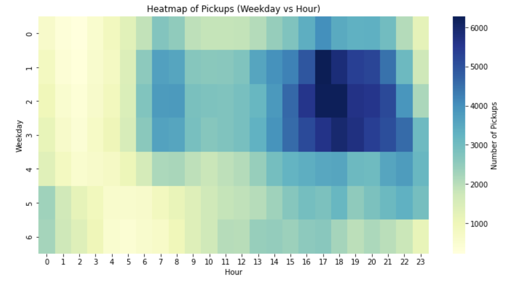

Uber pickups in New York City
As a transportation engineering consultant and data scientist, I am interested in how travel behavior varies across space and time, and what those patterns reveal about demand, mobility, and system performance. In this project, I analyze a sample of Uber pickup data from New York City to explore temporal trends and identify geographic clusters of activity. Ridehailing data provides a unique lens into real world travel demand by capturing where people choose to travel and when those decisions occur.

1. Data and tooling
The analysis is conducted in Python using pandas for data loading and preparation, matplotlib and seaborn for visualization, and scikit learn for KMeans clustering. The raw dataset consists of pickup timestamps and geographic coordinates.
2. Data cleaning and feature engineering
Column names are standardized and duplicate records removed. Pickup timestamps are converted to datetime format and expanded into key temporal features including hour, day of month, weekday, and month. These features allow demand to be compared across multiple temporal scales.
3. Geographic filtering
To focus the analysis on realistic New York City trips, pickup coordinates are filtered using reasonable latitude and longitude bounds. This removes GPS errors and outlier points located outside the metropolitan area.
4. Temporal demand patterns
Pickup activity is summarized by hour, day of month, and weekday. The results show a strong late afternoon and early evening peak, with demand building steadily after the morning lull and peaking around typical after work hours. Activity is strongest during the middle of the week and declines on weekends.

5. Weekday by hour heatmap
Aggregating pickups by weekday and hour provides a compact view of recurring demand patterns. The heatmap reveals consistent weekday evening surges, particularly Tuesday through Thursday, while weekend demand is lower and more evenly distributed throughout the day.

6. Spatial clustering analysis
KMeans clustering is applied to pickup coordinates to identify geographic concentrations of ridehailing activity. Cluster centers align with known high demand areas including Midtown and Lower Manhattan, parts of Brooklyn and Queens, and peripheral regions. These clusters reflect a mix of employment centers, nightlife districts, and transit rich areas.
7. Key findings
Several clear patterns emerge from the analysis. Temporally, ridehailing demand peaks in the late afternoon and early evening and follows a strong weekday cycle. Spatially, pickups cluster around dense, transit accessible, and commercially active neighborhoods. Together, these trends demonstrate how ridehailing data can inform transportation planning, demand modeling, and operational decision making.